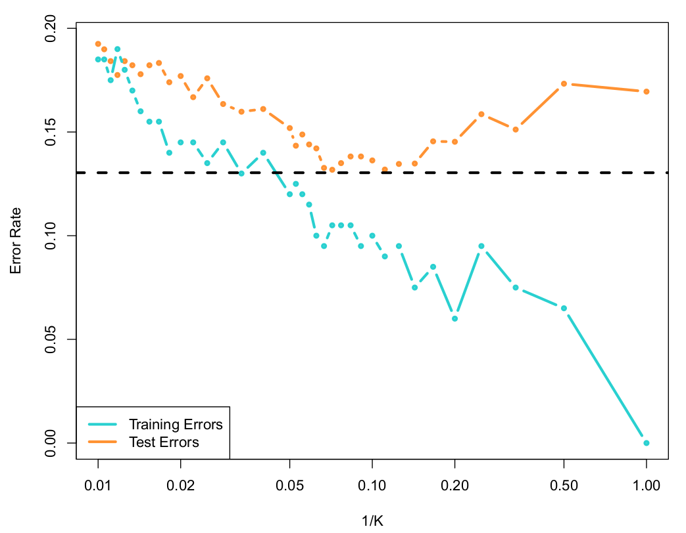

nni=1I[yif(xi)]This is the average number of errors in prediction by the classifier.2. Linear Classifierf:Rd{1,-1}f(x)=sign(wTx)=a
1,
wTx0
-1,
wTx<0
wx1x2{x|wTx0}{x|wTx<0}halfplanesThe optimization problem given below is NP hard.
min
w1
nni=1I[yisign(wTxi)]Using the SSE for classification is not a good idea. The SSE is sensitive to outliers.
min
w1
nni=1(wTxi-yi)2wx1x2Besides, modeling classification as a regression problem has another issue. There is no natural ordering among the labels in a classification problem. For example, if the labels are "cat", "dog", "mouse", all permutations of the labels {1,2,3} are equally valid. A regression based approach would however take into account the ordering between {1,2,3}. There is a definite sense in which 3>2>1 and 3-2=2-1=1. However, no such order exists among the labels "cat", "dog" and "mouse".3. KNNPrediction for a given test-point:Find d(xtest,xi) for all iSort distances in ascending orderFind the labels of the first k pointsReturn the most frequently occurring labelUsually an odd number is chosen for k to avoid ties.Hyperparameters:kdistance metricL2L1k=3Dataset
Figure 1:Source: Pg 36, ISLP
Effect of k on decision boundaryAs k increases, the model becomes less flexible.
Figure 2:Source: Pg 39, ISLP

Figure 3:Source: Pg 39, ISLP
AdvantagesVery easy to implementInterpretableIncreases trust in the modelEasy to explain to non-expertsDisadvantagesComputationally expensiven points in training datan distances have to be computed for each predictionn distances have to then be sortedNo model is learntTraining data has to be stored even during predictionCurse of dimensionalityCurse of DimensionalityAs dimensions increase, neighborhood information becomes less reliable.RR2R34. Decision Trees4.1. Binary treeQi:feature<valueDepth = 3NodesRoot node: Q1Internal nodes: Q2,Q3,Q4Leaves: L1,L2,L3,L4,L5The tree is the model. Once the tree has been grown from data, the data can be thrown away.
Depth: The number of edges on the longest path from the root to a leaf.
Q1Q2Q3L1L2L3YNYNNYQ4L4L5NY4.2. Entropy: Node impuritynP number of positive data-pointsnN number of negative data-pointsn=nP+nNp proportion of positive (negative) data-points in a nodep=nP
nThe entropy of a node is a measure if the node's impurity:H(p)=-plog2p-(1-p)log2(1-p)pImpurity4.3. Decision StumpPLRYND: dataset at the parentxf<s: questionDL and DR: partitionspP,pL,pR: proportions at P,L,R: proportions of points in LEP: entropy of PEL: entropy of LER: entropy of RIG: information gainn=nL+nR=nL
nE=-plog2p-(1-p)log2(1-p)IG=EP-[EL+(1-)ER]4.4. Growing a TreeGrowing a tree is a recursive and greedy algorithm:At each node, choose the (feature, value) pair that gives the greatest reduction in entropy or the maximum gain in information.Choice of values for a given featureSort all the values for this feature in the training dataset* Use this set of values (OR)* Use the mid-point between consecutive feature values in this set.Stop growing the tree when the stopping criterion is metDefault stopping criterion is when a node is completely pureOther stopping criteria are discussed in the end.Assign labels to leaf nodesLabel is most frequently occurring labelSample dataset1234567812345678Treex2<5.5x1<5.5x1<5.5YN0110YNNYDecision boundary1234567812345678Decision Regions4 regions4 leavesIn general, boundaries of the regions are parallel to the axes:RR2R3Rdhyper-rectanglesPredictionTraverse the tree. When a leaf node is reached, output the label of the leaf node.OverfittingDeep trees have high variance.x1<3.5x2<5.5x2<2.50x1<2.51x1<5.501x2<5.5017 regions7 leavesMitigationMinimum samples at leaf nodeMaximum depthMinimum decrease in impurityAdvantagesShallow trees are interpretableEasy to implementDisadvantagesSimple model with low predictive powerDeep trees have high variancesmall changes to the training data result in big changes in the resulting tree5. ReferencesISLP: Introduction to Statistical Learning using Python